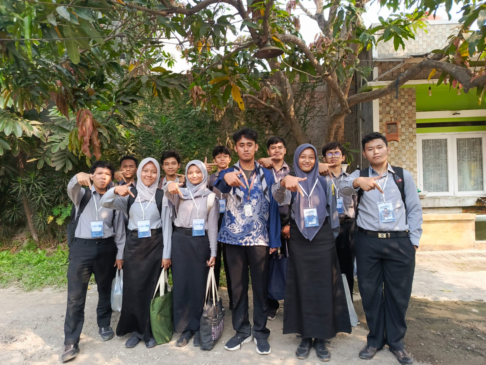

that boy on the tree stuck because he dumb

Ini adalah poster yang kami buat untuk acara IT Bootcamp
dengan tema Website development. Kami memilih warna ungu lilac
karena warna ini melambangkan kreativitas, imajinasi, dan
inovasi. Warna ini juga memberikan kesan yang tenang dan
menenangkan, sehingga dapat membantu menciptakan suasana yang
kondusif untuk belajar dan berkreasi.
basis data berpusat pada prinsip bagaimana manusia mengorganisasi,
menyimpan, mengelola, dan memaknai informasi secara terstruktur demi
mendukung pengambilan keputusan yang efektif
basis data berpusat pada prinsip bagaimana manusia mengorganisasi,menyimpan,mengelola,dan memaknai informasi secara terstruktur demi mendukung pengambilan keputusan yang efektif
